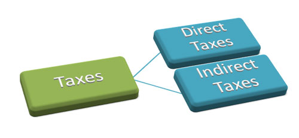
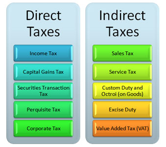
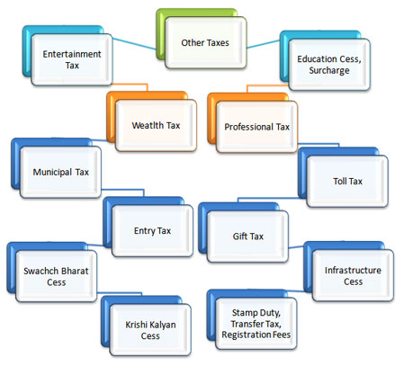
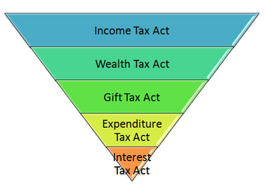

Tax is an obligatory contribution to the state revenue; the government of India levy on the income of workers and business gains or added up to the cost of some transactions, goods and services.
The government levies taxes on the citizens of the country to produce income for business projects to enhance the country’s economy and to lift up the standard of living of the nationals. The government’s authority to a levy tax in our country is drawn from the Constitution of India that deals out the supremacy to levy taxes to the State as well as Central governments. All the taxes levied within the country require being backed by an escorting law passed by the State Legislature or the Parliament.
There are two types of taxes namely, direct taxes and indirect taxes. The implementation of both the taxes differs. You pay some of them directly, like the cringed income tax, corporate tax, and wealth tax etc while you pay some of the taxes indirectly, like sales tax, service tax, and value added tax etc.


However, apart from these two traditional taxes, there are other taxes also, which has been affected to serve a specific agenda by the country’s Central Government. ‘Other Taxes’ are imposed on both the taxes, direct and indirect tax like the currently launched Swachch Bharat Cess Tax, Infrastructure Cess Tax, and Krishi Kalyan Cess Tax among others.

What is Direct Tax?
As stated earlier, you pay these taxes directly. The government levy such taxes directly on an individual or an entity and it cannot get transferred to any other person or entity. There is only one such federation that winks at the direct taxes, i.e. the Central Board of Direct Taxes (CBDT) governed by the Department of Revenue. The CBDT has, to assist it with its sense of duties; the backup of several acts that preside over several aspects of the direct taxes.
A few of these acts are as under:

Income Tax Act is also called the IT Act, 1961. Income Tax in India is governed by the rules set by this act. The income taxed by this act can be generated from any source such as profits received from salaries and investments, owning a property or a house, a business, etc. The IT Act defines the tax benefit you can avail on a life insurance premium or a fixed deposit. It also decides the savings from your income via investments and the tax slab for your income tax.
The Wealth Tax Act came into effect in the year 1951 and is in charge of the taxation linked with an individual’s net wealth, a Hindu Unified Family (HUF) or a company. The easiest computation of wealth tax was:
If the net wealth of an individual exceed Rs. 30 lakhs, then 1 percent of the exceeded amount is payable as a tax. It was put to an end in the budget that was announced in 2015. Since then, it has been substituted with a surcharge of 12 percent on the individuals that generate an income more than Rs. 1 crore p.a. It is also pertinent to the companies, which have generated revenue of over Rs. 10 crores p.a. The fresh guidelines radically raised the sum the government would accumulate in taxes as disparate the amount they would accumulate via wealth tax.
This Act was brought into existence in the year 1958 and assured that if a person received gifts or presents, valuables or monetary, he has to pay a tax on those gifts. The tax on aforementioned gifts was sustained at 30 percent but it was put to an end in the year 1998. Originally, if a gift was given, and it was somewhat like shares, jewellery, property etc it was subject to tax. As per the new rules, the present given by the members of the family like parents, spouse, uncles, aunts, sisters and brothers are not subject to tax. Even presents you receive from the local authorities are also exempted from such taxes. If somebody, other than that of the exempted entities, presents you anything, which has a value beyond Rs. 50,000 then the whole gift amount is subject to tax.
The Expenditure Tax Act came into existence in the year 1987 and cope with the expenditure made by you, as a person, may incur whilst you avail the services of a restaurant or a hotel. It is appropriate to the entire nation other than Jammu and Kashmir. It asserts that some expenses are liable under the act if the amount is beyond Rs. 3,000 contingent upon a hotel and all the expenses drawn in a restaurant.
This Act of 1974 copes with the tax, which was chargeable on interest produced in some specific situations. In the Act’s last amendment, it is stated that this act is not applicable to interest earned after March 2000.
Here are a few examples of several kinds of direct taxes:
These are a few of the direct taxes that are paid by you:
Income Tax is one of the most popular and least implicit taxes. It is such a tax, which is imposed on your income in a fiscal year. There are a lot of facets to the income tax, like taxable income, reduction of the taxable income, tax slabs, tax deducted at source (TDS), etc. This tax is pertinent to both the companies and individuals. For individuals, the amount they pay against the tax is based on the tax bracket they breeze in. This slab or tax decides the tax that an individual has to pay depending upon their annual income and spreading from no tax to 30 percent for the higher income groups.
The government of India has fixed various tax slabs for different groups of people, namely very senior citizens (people who have attained an age above 80 years), senior citizens (people who have attained an age of 60 to 80 years), and general taxpayers.
New Tax Slab of Income Tax for FY 2017-2018 (AY 2018-2019)
Tax slab for HUF and individual tax payers (not more than 60 years of age) (both males and females)